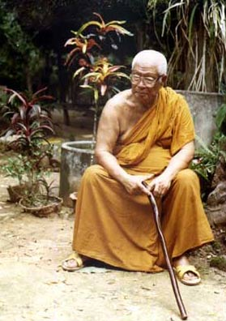

|
ยูเนสโกยกย่อง
พุทธทาสภิกขุ เป็นบุคคลสำคัญของโลก
ยูเนสโกประกาศยกย่อง พุทธทาสภิกขุ
เป็นบุคคลสำคัญของโลกและร่วมฉลองชาตกาลครบ 100 ปี ในวันที่ 27
พฤษภาคมปีหน้า เตรียมตั้งกรรมการระดับชาติขึ้นจัดงาน ระบุคำสอนจากหนังสือของพุทธทาสได้รับความยอมรับในระดับนานาชาติ
นายจาตุรนต์
ฉายแสง รัฐมนตรีว่าการกระทรวงศึกษาธิการ เปิดเผยว่า ในการประชุมสมัยสามัญของ
องค์การศึกษาวิทยาศาสตร์และวัฒนธรรมแห่งสหประชาชาติ (ยูเนสโก)
เมื่อวันที่ 20 ตุลาคมที่ผ่านมา ได้มีมติให้ประกาศยกย่อง พระธรรมโกศาจารย์
พุทธทาสภิกขุ เป็นบุคคลสำคัญของโลก และบรรจุการเฉลิมฉลองครบชาตกาล
100 ปี ในวันที่ 27 พฤษภาคม 2549 ซึ่งรัฐบาลจะได้ดำเนินการตั้งคณะกรรมการระดับชาติขึ้นโดยอาจมีรองนายกรัฐมนตรีเป็นประธาน
เพื่อเตรียมการเฉลิมฉลอง จัดกิจกรรมวิชาการเผยแพร่หลักธรรมพุทธศาสนาที่พุทธทาสภิกขุได้สั่งสอน
ร่วมกับคณะกรรมการอำนวยการจัดงาน 100 ปี พุทธทาสภิกขุ ประกอบด้วยผู้ทรงคุณวุฒิ
และลูกศิษย์ของท่าน ซึ่งได้แต่งตั้งไปก่อนแล้วตั้งแต่วันที่
16 กันยายน 2548
ความหมายของการเฉลิมฉลองไม่ใช่การจัดมหรสพ
แต่หมายถึงการจัดกิจกรรมทางวิชาการ เผยแพร่ข่าวสารข้อมูลการประชุมเสวนา
ซึ่งจะเป็นประโยชน์ต่อสังคม รวมทั้งในการเผยแผ่หลักธรรมของพุทธทาส
ซึ่งก็คือหลักธรรมของพุทธศาสนาต่อประชาชนทั่วไปด้วย นายจาตุรนต์
กล่าว และว่าพุทธทาสภิกขุ นับเป็นคนไทยลำดับที่ 18 ที่องค์การยูเนสโกประกาศยกย่องให้เป็นบุคคลสำคัญของโลกด้วย
ด้าน นายสันติสุข
โสภณศิริ กรรมการมูลนิธิเสถียรโกเศศ-นาคะประทีป ซึ่งเป็นองค์กรที่ผลักดันให้มีการเสนอชื่อต่อองค์การยูเนสโกครั้งนี้
เปิดเผยประวัติโดยสังเขปว่าพุทธทาสภิกขุ เดิมชื่อว่า เงื่อม
พานิช เกิดเมื่อวันอาทิตย์ที่ 27 พฤษภาคม 2449 ตรงกับวันขึ้น
7 ค่ำ เดือน 7 ปีมะเมีย ในครอบครัวค้าขายของชำ เป็นบุตรของนายเซี้ยงและนางเคลื่อน
พานิช ที่หมู่บ้านกลาง ตำบลพุมเรียง ซึ่งสมัยนั้นยังเป็นที่ตั้งของจังหวัดไชยา
ปัจจุบันคืออำเภอไชยา จังหวัดสุราษฎร์ธานี ศึกษาระดับสูงสุดถึง
ม.3 จากนั้นบวชเป็นพระที่วัดโพธาราม ไชยา เมื่ออายุ 20 ปี ได้รับฉายาว่า
อินทปัญโญ แปลว่าผู้มีปัญญาอันยิ่งใหญ่ และไม่ได้สึกอีกเลย
หลังจากศึกษาธรรมะจนถึงระดับหนึ่ง
ทำให้ท่านมีความเชื่อว่าพระพุทธศาสนาที่สอนที่ปฏิบัติกันในเวลานั้นคลาดเคลื่อนไปมากจากที่พระพุทธองค์ทรงชี้แนะ
ท่านจึงตัดสินใจหันหลังกลับไปไชยาเพื่อศึกษาตามแนวทางที่ท่านเชื่อมั่น
พร้อมทั้งตั้ง สวนโมกขพลาราม ขึ้นเมื่อวันวิสาขบูชา 12 พฤษภาคม
2475 และได้ประกาศใช้ชื่อ พุทธทาส เพื่อแสดงอุดมคติสูงสุดในชีวิตของท่าน
นายสันติสุข กล่าว
นายสันติสุข
เปิดเผยอีกว่า ท่านได้รับสมณศักดิ์สูงสุดเป็นพระราชาคณะชั้นธรรมที่พระธรรมโกศาจารย์
เมื่อปี 2520 ส่วนในระดับนานาชาตินั้น ปัจจุบันทุกมหาวิทยาลัยที่มีแผนกสอนวิชาศาสนาสากลในหลายประเทศล้วนศึกษางานของท่าน
มีหนังสือได้รับการแปลเป็นภาษาต่าง ๆ เช่น อังกฤษ ฝรั่งเศส เยอรมัน
จีน อินโดนีเซีย กว่า 20 เล่ม จากต้นฉบับภาษาไทยทั้งหมด 140
เล่ม
ทั้งนี้
พระธรรมโกศาจารย์ หรือท่านพุทธทาส นามเดิมคือ เงื่อม พานิช เกิดเมื่อวันที่
27 พฤษภาคม 2449 เป็นชาวอำเภอไชยา จังหวัดสุราษฎร์ธานี อุปสมบทเมื่ออายุ
20 ปี ณ วัดอุบล อำเภอไชยา จังหวัดสุราษฎร์ธานี เมื่อปี 2469
โดยมีพระครูโสภณเจตสิการาม เป็นพระอุปัชฌาย์ ได้รับฉายาว่า "อินทปัญโญ"
เดินทางศึกษาธรรมต่อที่วัดปทุมคงคา กรุงเทพฯ สอบได้นักธรรมเอก
และเรียนภาษาบาลีได้เปรียญ 3 ประโยค สร้างสำนักปฏิบัติธรรมที่วัดตระพังจิก
ตำบลพุมเรียง อำเภอไชยา จังหวัดสุราษฎร์ธานี เมื่อวันที่ 12
พฤษภาคม 2475 ให้ชื่อว่า "สวนโมกขพลาราม" แปลว่าสวนป่าเป็นกำลังหลุดพ้นจากทุกข์
ต่อมาเมื่อปี 2487 ได้ย้ายสวนโมกขพลารามมายังสถานที่แห่งใหม่คือวัดธารน้ำไหลในปัจจุบัน
ได้อุทิศตนเพื่องานพระศาสนาและทำงานมุ่งช่วยเหลือเพื่อนมนุษย์
ให้พบสันติสุขตามปณิธานที่ตั้งไว้ มีผลงานทางธรรมไว้มากมาย เช่น
หนังสือและเทปบันทึกเสียง ได้รับการเผยแพร่อย่างกว้างขวาง ทั้งเป็นภาษาไทยและภาษาต่างประเทศ
ทำให้ได้รับการนับถือยกย่องจากพุทธศาสนิกชนทั้งในและต่างประเทศ
กระทั่งได้รับการยอมรับจากชาวโลกว่าเป็นสมณปราชญ์ผู้ยิ่งใหญ่
ผู้มีบทบาทอย่างสูงต่อพุทธศาสนา พระธรรมโกศาจารย์ มรณภาพเมื่อวันที่
8 กรกฎาคม 2536 สิริอายุ 87 ปี 67 พรรษา
ที่มา : นสพ.ผู้จัดการ 21 ต.ค.48
|